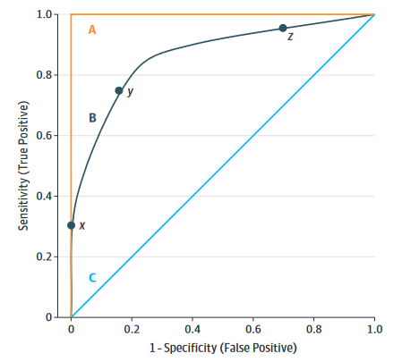

4 模型评价
当模型建立好之后，大家比较关心的问题是我的模型到底表现好不好，这时候就要使用各种指标进行评价，也就是大家所说的衡量模型性能。在医学相关的文献中，大家见到比较多的指标是ROC曲线下面积，也就是AUC。
对于不同的数据类型，使用的评价指标是不一样的，对于不同的评价指标，它所衡量的侧重点也是不一样的。比如，回归模型中常用的两个指标是均方根误差（root mean squared error，RMSE）和决定系数（coefficient of determination，又名R2），RMSE是衡量模型准确性的，而R2是衡量相关性的。如果是分类模型就不能用这两个指标了。
4.1 回归任务评价
如果你的数据是一个回归任务，也就是你的数据的结果变量是数值型的，常用的模型评价指标如下所示：
- 均方误差（Mean Squared Error, MSE）: 定义为预测值与实际值之差的平方和的均值。
- 均方根误差（Root Mean Squared Error, RMSE）: 是MSE的平方根，使得其单位与目标变量相同，便于解释。RMSE对异常值很敏感，极端异常值会让RMSE明显变大。如果只是为了衡量模型整体的误差，则使用RMSE更佳。
- 平均绝对误差（Mean Absolute Error, MAE）: 计算预测值与实际值之间绝对差值的平均数。MAE对所有误差给予相等的权重，不被大误差过分影响，比RMSE更适合有极端值的情况。
- 平均绝对百分比误差（Mean Absolute Percentage Error, MAPE）: 计算预测误差相对于实际值的百分比的平均值，适用于对预测误差的相对大小更感兴趣的场景。
- 中位绝对误差（Median Absolute Error, MAE）：
- R²（决定系数，Coefficient of Determination）: 表示模型解释的变异量占总变异量的比例，值范围从0到1，越接近1表示模型拟合越好。R²衡量了模型解释数据变异的能力。
- 解释方差分数（Explained Variance Score）: 类似于R²，但直接作为比例表示模型解释的方差部分，值越大表示模型拟合越好。
凡是叫xxx误差的指标，一般都是越小说明模型越好。
选择合适的评价指标取决于具体的应用场景、数据特性以及分析目的。例如，在某些领域，如金融或库存管理，可能更关心MAPE，因为它提供了关于预测误差相对于实际值比例的信息。而在其他情况下，R²或调整后的R²可能更适合用来评估模型的整体解释能力。
4.2 分类任务评价
4.2.1 常规指标
如果你的数据是一个分类任务，也就是你的数据的结果变量是分类型的，常用的模型评价指标如下所示：
- 混淆矩阵（Confusion Matrix）：混淆矩阵是分类任务中所有可能预测结果与真实结果的总结，包含了真阳性、假阳性、真阴性和假阴性的计数，是下述精确率、召回率等指标计算的基础。
用一张图来总结混淆矩阵以及由此产生的各种指标（来自于维基百科）：

- 准确率（Accuracy）：准确率是最直观的评价指标，定义为分类正确的样本数占总样本数的比例。但是在类别分布不均匀（即类别不平衡）的情况下，准确率可能产生误导。假如有100个人，其中只有1个人有癌症，其余99个没有癌症，如果模型此时把100个人都预测为没有癌症，那么准确率是99%，非常高，但是此时对于那个漏诊的人来说是不能接受的。此时漏诊率为100%，漏诊率=1-灵敏度。
- 精确率（Precision）：也叫查准率，精确率是指被模型预测为阳性的样本中，真正是阳性的比例。
- 召回率（Recall）：也叫查全率，在医学中通常被称为灵敏度（sensitivity）,真阳性率，召回率是指所有实际为阳性的样本中，被模型正确识别为阳性的比例。还是上面那个100人的例子，此时它的灵敏度就是0，这样的结果是没有意义的，因为对于临床来说，漏诊是不能被接受的。以查全率为横坐标，以查准率为纵坐标，绘制曲线，可以得到如下图所示的P-R曲线。

- F1分数（F1-Score）：F1分数是精确率和召回率的加权平均值，旨在同时考虑精确率和召回率，特别适用于类别不平衡问题，范围也是0~1之间。精准率和召回率是相互矛盾的，一个增大另一个就会减小，所以我们需要找到一个平衡点，由此引出了F1分数，F1分数越高，说明模型越稳健。
- 特异度（Specificity）：指所有实际为阴性的样本中，被模型正确识别为阴性的比例。上述的100人的例子，特异度就是100%，也就是说你没有误诊的。误诊率是0，误诊率=1-特异度。
- ROC曲线下面积（Area Under the Receiver Operating Characteristic Curve）：AUC代表ROC曲线下的面积，衡量的是模型在不同阈值下的综合性能。AUC值越接近1，说明分类器的性能越好。AUC不受类别分布的影响，适用于不平衡数据集。临床上灵敏度和特异度是互相矛盾的，一个增加另一个必然减少，通常我们需要一个最佳的平衡点，让ROC曲线下面积最大。可参考：ROC曲线合集

- 马修斯相关系数（Matthews Correlation Coefficient，MCC）：同时考虑混淆矩阵中4个类别的结果，并综合考量，范围是-1~1，1表示完美预测，0表示随机预测，-1表示完全相反。尤其适用于类不平衡的二分类问题。
- 均衡准确率（Balanced Accuracy）：当出现类别不平衡时，使用准确率评价可能会出现较大偏差，此时可以使用均衡准确率，它是每个类别中预测正确的比例的算术平均值。
- Log Loss（交叉熵损失）：又叫对数损失、对数似然、逻辑损失，特别适用于概率预测模型，衡量预测概率分布与实际类别之间的差异。越接近0越好。
- Brier-Score：布里尔分数，衡量模型预测的类别的概率与真实值之间的误差，仅用于二分类数据，范围是0到1，越小越好。
- 校准曲线（Calibration plot）：衡量模型预测的概率和真实概率的差异，是一种比单纯评价分类准确性更加精确的评价指标。
- 预测概率直方图：评价模型预测概率的分布，并据此判断模型的置信度，临床预测模型中叫校准度。
4.2.2 临床预测模型
临床预测模型其实只是机器学习在临床医学中的一种应用形式而已，当然这一领域除了上面的常规指标外，还有一些其他评价方式。
总的来说，临床预测模型的评价可以分为4个部分：
- 区分度
- 校准度
- 临床适用性
- 模型改善度
区分度指的是一个模型能正确把人群分为患者/非患者，或者正确区分个体是处于低风险、还是处于高风险，或者正确预测患者是存活、还是死亡等的能力。混淆矩阵和由此计算出的各种指标都是区分度的评价。
但是一个模型只是有良好的区分度是不够的，因为临床是很复杂的，并不是只要正确分类就行了。对于不同的患者，可能他们都处于高风险组，但是对于50%的风险和80%的风险，我们的处理是不一样的！
这就引出了校准度的概念，校准度指的是结局实际发生的概率和模型预测出的概率之间的一致性，所以校准度又叫一致性、拟合优度（goodness-of-fit），校准度体现了一个模型对绝对风险预测的准确性。校准度的评价在文献中主要是通过校准曲线实现，但是Brier-Score、Log-Loss也是用来评价校准度的。
临床适用性的评价主要是通过决策曲线实现的。模型改善度主要是评价新模型比旧模型改善了多少，需要有模型之间的比较才能得出。
关于临床预测模型评价的更详细的内容，可参考：一文搞懂临床预测模型的评价
4.3 计算方法
在实际使用时我们不需要知道具体的计算方法，只需要它们的意义即可，因为计算只需要1行代码就实现了。
虽然不同的R包的建模的语法是有区别的，但是在计算模型评价指标时，代码逻辑和使用语法却是高度一致的。
不管是回归任务还是分类任务，计算各种指标时都是需要真实结果和预测结果的，使用形式一般都是如下的格式：
# 计算RMSE
rmse(data, 真实结果, 预测结果)
# 或者
rmse(真实结果, 预测结果)
# 计算准确率
accuracy(data, 真实结果, 预测结果)
# 或者
accuracy(真实结果, 预测结果)如果你是要计算其他指标，只要换个对应的函数即可（演示用，具体的函数名字可能会有差别）。
对于分类任务的评价指标需要注意，因为分类任务的指标计算有的是需要真实类别和预测类别的，比如混淆矩阵、敏感性、特异性这种，有的是需要真实类别和预测概率的，比如ROC曲线，需要啥就提供啥，不能乱写。
由于模型评价指标的计算（和绘图）语法基本上大同小异，你所有需要的只是预测结果和真实结果而已，为了避免无意义的重复，并没有在每个算法中都进行演示，比如校：准曲线和决策曲线只在KNN和CatBoost中演示。
4.4 总结
不同的任务类型需要的指标不同，不同的场景下需要的指标也是不同的，需要根据自己的实际情况灵活选择，有时你可能需要宁可错杀，不能放过，但是有时你可能需要宁可放过，不能错杀，所以指标的选择不是随便选的，一定要根据自己的情况来。